SAMOSTOJNOSTI

SAMOSTOJNOSTI
ČASOPISJU
ČASOPISJU
V naslednjih mesecih so v skupščini zavrnili spremembe jugoslovanske ustave zaradi nedemokratičnega odločanja in neenakopravnosti, ukvarjali pa so se tudi s programsko usmeritvijo vlade, problematiko služenja vojaškega roka zunaj Slovenije in mediji.
Vroče razprave so se nadaljevale ob vladnih predlogih glede uresničevanja Deklaracije o suverenosti, uresničevanja skupščinskih stališč o vojaški obveznosti in ureditve pristojnosti imenovanja poveljnika republiške teritorialne obrambe. Poslanci so razpravljali tudi o osnutku slovenske ustave.
Skupščina Republike Slovenije je 27. septembra 1990 z ustavnimi amandmaji uresničila namene Deklaracije o suverenosti in razveljavila številne zvezne predpise v Sloveniji, hkrati pa prevzela odločanje o služenju vojaškega roka, teritorialni obrambi in njenem poveljniku.
ČASOPISJU
 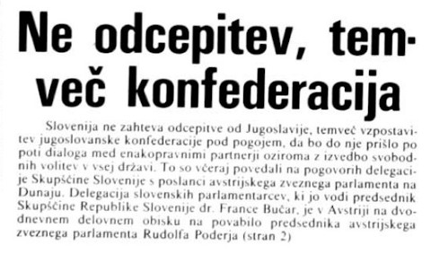
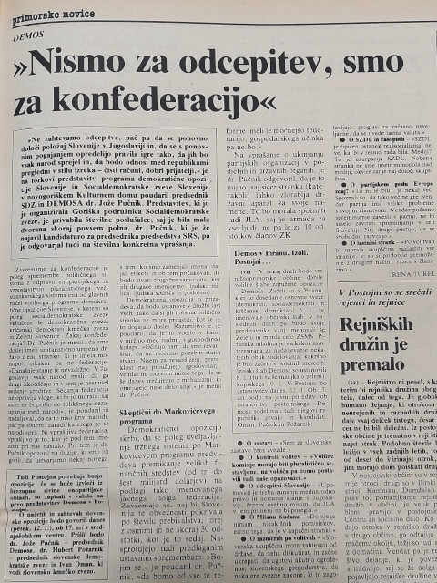
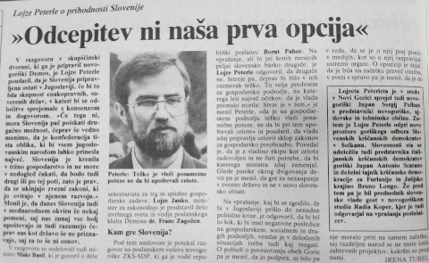
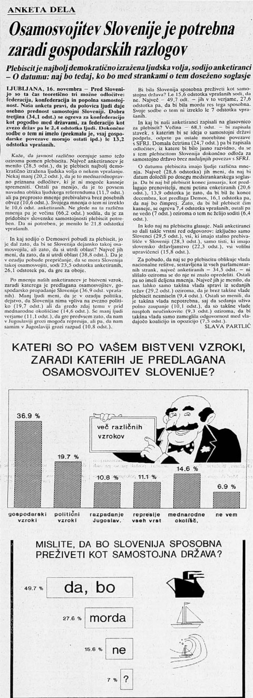
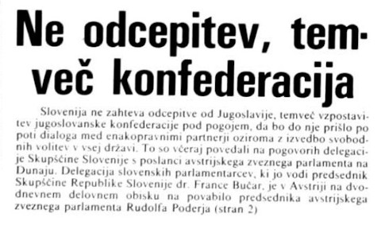
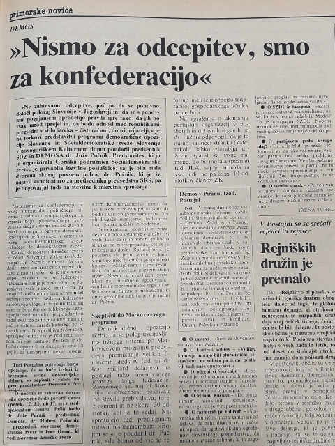
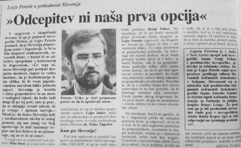
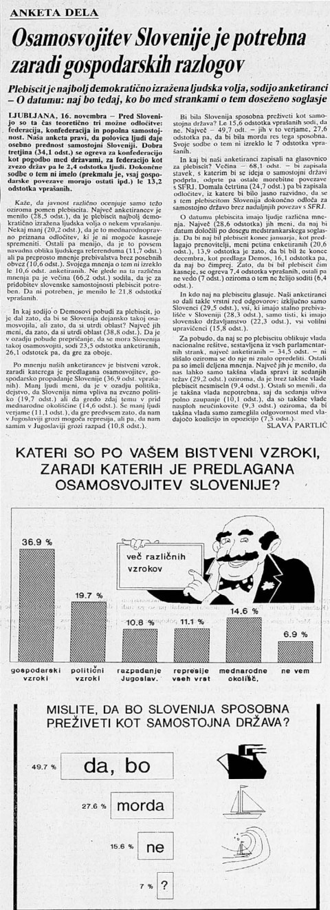

 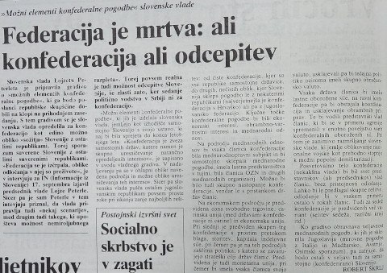
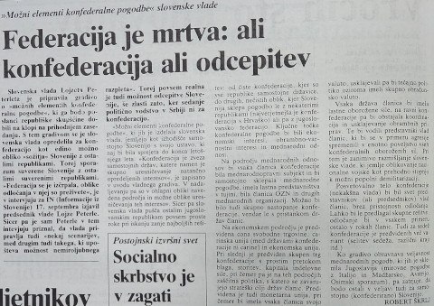
Slovenski poskus, da bi jugoslovanske republike v jeseni 1990 podpisale konfederalno pogodbo, so vse republike razen Hrvaške zavrnile. Slovenska oblast je zato predlagala izvedbo plebiscita o samostojnosti in neodvisnosti Slovenije, odločitev o njem pa je bila sprejeta na posvetu vodstva Demosa v Poljčah, 9. novembra 1990. Posvet je pomenil pomembno prelomnico, saj je začrtal pot samostojne Slovenije izven Jugoslavije in dokončno zavrgel idejo o konfederaciji.
6. decembra je bil sprejet Zakon o plebiscitu o samostojnosti in neodvisnosti Republike Slovenije in podpisan medstrankarski sporazum o skupnem nastopu na njem.

ČASOPISJU
 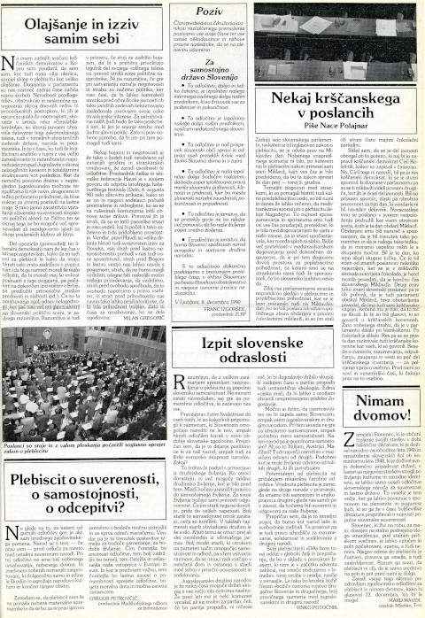
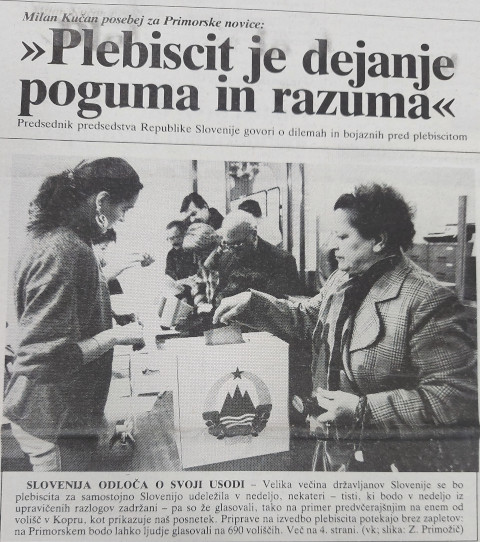
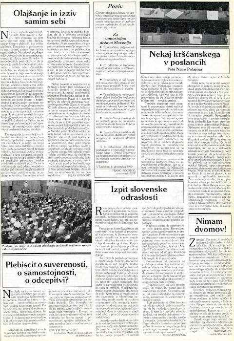
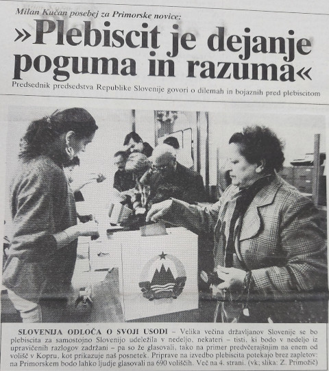
 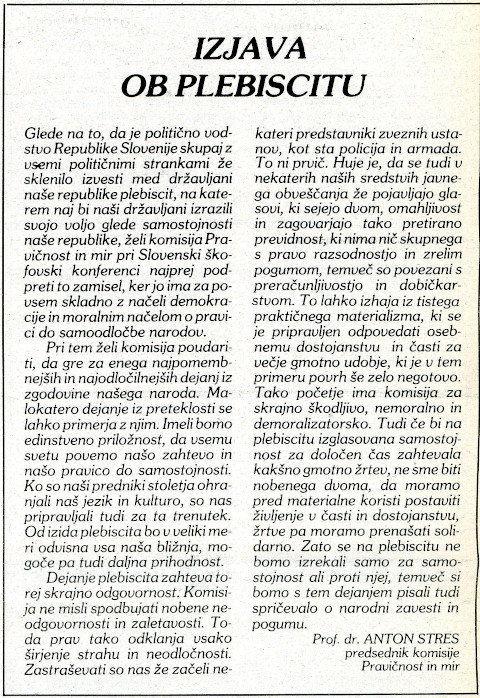
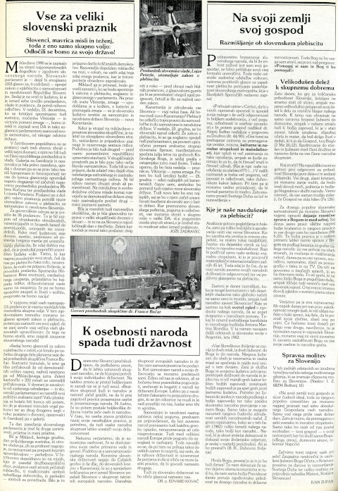
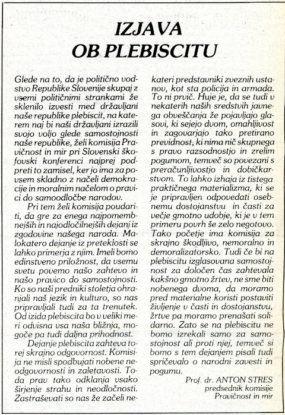
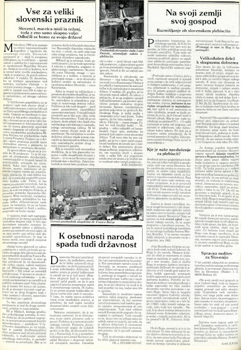
ČASOPISJU
ČASOPISJU

ČASOPISJU
SAMOSTOJNOSTI

Zakon o državljanstvu Republike Slovenije;
Zakon o potnih listinah državljanov Republike Slovenije;
Zakon o nadzoru državne meje;
Zakon o kreditnih poslih s tujino;
Zakon o Banki Slovenije.ČASOPISJU
ČASOPISJU

Temeljna ustavna listina o samostojnosti in neodvisnosti Republike Slovenije;
Ustavni zakon za izvedbo Temeljne ustavne listine o samostojnosti in neodvisnosti Republike Slovenije;
Deklaracija ob neodvisnosti.Slovenije 25. junija 1991.
ČASOPISJU
DANES SO DOVOLJENE SANJE, JUTRI JE NOV DAN
Ljubljana, 26. junij 1991
Razglasitev samostojnosti na slovesnosti na Trgu republike v Ljubljani
Z rojstvom dobi človek pravico do sanj. Z delom dobi pravico, da zbližuje življenje in sanje. Mi smo včeraj povezali oboje; zase, za mnoge rodove Slovencev, ki so davno nekoč sanjali te iste sanje in za prihodnje rodove, ki bodo na teh sanjah gradili nov svet.
Od včeraj imamo Slovenci svojo državo. Od danes živi večinski del slovenskega naroda v lastni, samostojni in neodvisni državi. Zamejci od Trsta, Gorice in Benečije, preko Koroške do Porabja, kamor jih je zamejila z nami trda zgodovina, in rojaki, raztreseni po vsem svetu, imajo zdaj v Republiki Sloveniji svojo matično domovino in oporo.
Današnja slavnostna razglasitev svobodne in samostojne države Slovenije je neizbežno in globoko smiselno soglasno dejanje tega naroda, njegove vključenosti v moderno svobodnjaško Evropo od 18. stoletja naprej, zvestobe temeljnemu političnemu programu zedinjene Slovenije, odločitev ob razpadu avstro-ogrske monarhije in predvsem protifašističnega boja za nacionalno preživetje ter njenega častnega prispevka k svobodi demokratične Evrope med zadnjo vojno. Skozi vso to zgodovino si nismo do nikogar nabrali dolgov. Naša zgodovina je častna in čista.
Koraka, ki smo ga včeraj stopili, nam ni narekovala težnja po osamitvi, niti lažno upanje o podarjenem lepšem in udobnejšem življenju v kakšni drugi državni skupnosti. Doslej nam ni zgodovina poklanjala ničesar. Vse smo si morali trdo prigarati. Zato smo tudi obstali. Svoji na svojem! To dejanje nam je narekovala zavest odgovornosti za sam obstoj slovenskega naroda in demokratičnost slovenske prihodnosti. Nosimo jo zdaj častno in s pokončno držo.
Z mnogokom smo živeli v skupnosti. V naši zavesti meje niso okop. Bili smo odprt prostor za duhovne in druge tokove. Meje so nam postavljali drugi, nas silili tja, kamor nismo hoteli. Zdaj nastaja Evropa, ki z mejami ne more več živeti. Ne more ločevati med velikimi in majhnimi, temveč le med dobrimi in slabimi, ustvarjalnimi in nesposobnimi, tistimi, ki vlečejo in tistimi, ki ovirajo razvoj. Neobremenjeni in pod nikogaršnjim patronstvom, s polno odgovornostjo in enaki med enakimi se želimo in hočemo vključevati vanjo. Nikomur v škodo, slovenski prihodnosti in pohelsinški Evropi v prid in zavezo.
Današnji čas terja drugačna razmerja med narodi, ki živijo na jugovzhodu Evrope. Dogovor med suverenimi državami je trdnejše poroštvo za mir, stabilnost in napredek ljudi. Nismo se odcepili. Nikamor nismo odšli, nismo podrli mostov za seboj. Nismo porušili tistega, kar je bilo v tej naši skupnosti dobrega in prijaznega za vse nas. Uresničili smo način življenja, ki ima prihodnost v nastajajoči združeni stari celini. Dinamična razdalja naj nas povezuje. Omogočila nam bo, da drug drugega upoštevamo in spoštujemo, da sodelujemo in da kdaj tudi kaj skupnega ukrenemo. Vsem v dobro in z voljo vseh.
Kot tisočletni ustvarjalci evropskega izročila potrjujemo svojo pripadnost vsemu najboljšemu v tem izročilu. Vnaprej moralno podpisujemo vse konvencije, ki zagotavljajo človeško svobodo, socialno pravičnost in dostojno življenje, kulturni napredek, varovanje življenjskega prostora, vsakršno odprtost in miselni pluralizem. Vse, na čemer stoji najboljše v naši civilizaciji. Nikomur nismo nikoli delali sile. Zavračamo nasilje vseh oblik in namenov v razmerjih med ljudmi, med narodi in njihovimi državami.
Z včerajšnjo razglasitvijo suverene Slovenije se celo daljnosežno zavezujemo tudi sami sebi. V dobrem in hudem! Čakajo nas trde preizkušnje v vztrajnosti, doslednosti, demokratizmu, ustvarjalnosti, iznajdljivosti in zvestobi ciljem, ki smo jim zavezani. Demokracija, svoboda, spoštovanje človekovega dostojanstva in njegove pravice, spoštovanje manjšin in doseljencev, odprtost in sodelovanje z drugimi, tem vrednotam ostajamo zavezani za vselej. Njim so bili zavezani rodovi Slovencev pred nami, ker so enake stremljenjem vseh svobodnih demokratičnih ljudi in narodov tega sveta. Ta pravična in moralna misel naj nas krepi v modrosti, odločnosti in dejanjih. Ravna naj nam pot v prihodnost. Da ne bomo klecali na vsakem koraku. Temeljna resnica je bila in ostaja, da sta svoboda in dostojanstvo posameznika neločljivi in nedeljivi od suverenosti naroda. Kdor odreka eno, žrtvuje tudi drugo.
Danes je naš veliki praznik. Želeli smo radost deliti z vsemi, tudi tistimi, ki so si tak dan že zdavnaj zapisali v svojo zgodovino. Zdaj vstopamo v družino svobodnih samostojnih narodov. Ne moremo razumeti, kako bi moglo to koga motiti, ko velja vsem naše odprto srce in v pozdrav iztegnjena dlan. Skaljeno je naše veselje. Z neutemeljenimi prigovori drugih in z grožnjo represije jugoslovanskih oblasti se naše dobre namere zavračajo. Je mogoče tako izbrisati iz spomina vse, kar je Slovenija v dobrem in slabem delila z drugimi, s katerimi smo živeli v skupni državi? Ne ogrožamo nikogar. Zato ni treba letal nad naša mesta, ne tankov na naše ulice. Silo kaže tisti, ki mu manjka argumentov in trezne presoje.
Nerazumevanje v nekaterih delih Jugoslavije in nasprotovanje uradne tujine nam nalaga docela trezno spoprijemanje s sprejeto odločitvijo.
Iluzij tako nismo imeli velikih. Ostali smo sami s sabo. In s prijatelji, ki se niso prestrašili in nas ne bodo zatajili. Zdaj moremo pretehtati, kaj v resnici smo in kaj zmoremo. Morda bi v drugačnih razmerah zoreli dlje in bi svojo usodo bolj zvezali z drugimi, z njihovo pomočjo in razumevanjem. Oboje bi nam bilo in nam bo seveda potrebno. Tako pa smo zmogli sami. Smo zrel narod, ki ve, kaj hoče, ki ve tudi, da je to, ne glede na vse, naša temeljna pravica, človeška in nacionalna. V našem življenju in v zgodovini slovenstva se resnično pričenja novo poglavje. Danes imamo pravico, da mu zapišemo na vrh neizpisane strani - samostojna, demokratična slovenska republika.
Naj nam živi, naj nas razveseljuje, naj nas krepi skladno z najboljšim izročilom za srečo vseh nas Slovencev, vseh državljanov in državljank Slovenije, Slovencev v zamejstvu in v svetu, ter srečo in uspeh vseh, s katerimi se bomo na dolgem potovanju v prihodnost prijazno srečevali, si pomagali in sodelovali.
Zmogli smo, ker je bila naša vera trda in ker ni bilo zle misli v naših dejanjih.
Hvala vam za to, dragi rojaki.
Nocoj so dovoljene sanje. Jutri je nov dan.
Milan Kučan
Spletni vir: Milan Kučan. Danes so dovoljene sanje, jutri je nov dan.
ČASOPISJU
VIDIKI